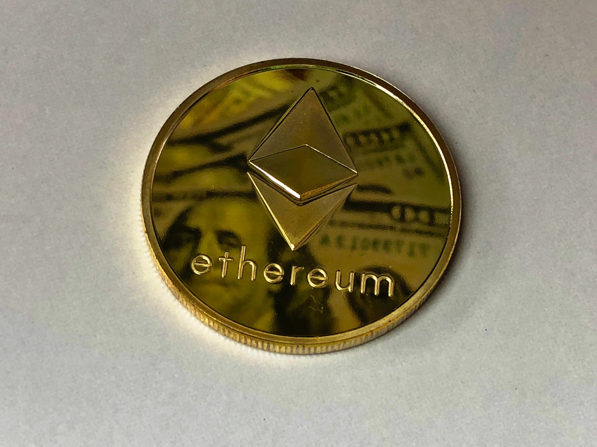
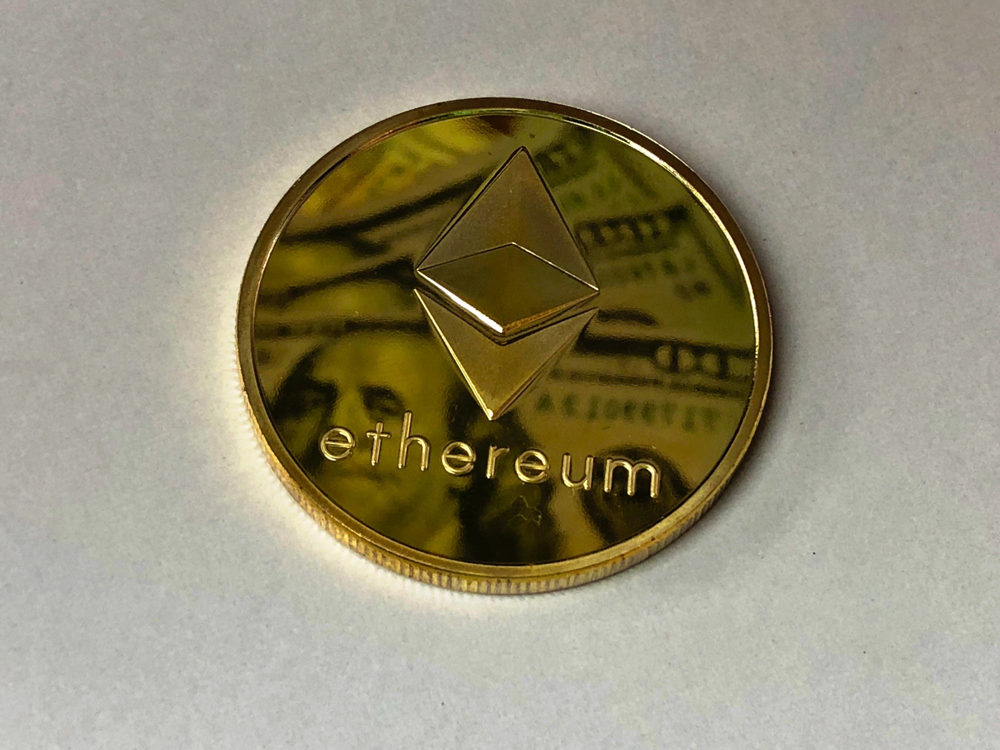

What is Cryptocurrency?
What is Cryptocurrency (Crypto)? For short Crypto is a digital currency that is mananged by people through a decentralized network. Decentralized meaning multiple domain controllers in case if a server were to go down. What makes crypto so different from the common currency (differing on where you live) is that there is no central authroity over it. This means no government. It is a system ran by the people and it fluctuates based of the people.
Why is it important?
Crypto is so important in the economically growing world because people want things to be done faster and more efficiently. With crypto you can make transactions that are secure and fast across the world in the blink of an eye. No going through banking services to make long transactions where people can be in your day-to-day lives. Instead it's a safe and easy way to make financial decisions.
Widely Known Crypto
 

Bitcoin
Dogecoin
Ethereum
Bitcoin is the biggest cryptocurrency that was started in 2009 by Satoshi Nakamoto.
Dogecoin was created by Billy Marcus and Jackson Palmer in 2013. This organization started as a meme of dog (which is purposely misspelled as doge).
Ethereum is a growing cryptocurrency that is used in the production of building new programs. It differs from Bitcoin because Bitcoin only a currency.
Crypto that are Important / On the Comeup
Cardano
Tether
Binance Coin
Cardano is a blockchain that is mainly used for tracing and identifying applications that are being streamed in from all over the world. One reason why it can explode is because it has similar components to Ethereum in the sense that idevelopers use it to make contracts and decentralized apps. Because of Ethereum's success, Cardano has it's potential.
Tether is one of those cryptocurrencies that's very important because it is a mix of the crypto world, and the banking world. Tether is a 1-to-1 ratio with the US dollar, so it is an easy and simple way to move funds from crypto markets to banking systems. It's a blockchain that is great for converting currencies.
Binance Coin sounds similar to Finance Coin. This is because they started as a group that had discount trading fees, but since 2017 they have branched out making their crpyto usable for travel booking, entertainment, financial services, etc.
Misconceptions
One huge misconception about cryptocurrency is that it's not safe and unsecure. Some crytography guarantees full anonymity that keep your whole identity protected. Crypto prospers through the people, becuase of this the government isn't in control of cryptogrophy and the transactions that occur.
Some beleive that crypto will take over the world in the next five years and wipe out banking systems. Although this is false, because crypto doesn't have the power yet to take out fiat currencies across the whole world. The issue is the crypto value flucuates a lot more than fiat currency.